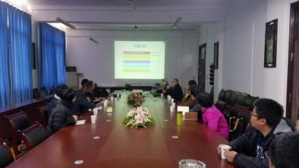
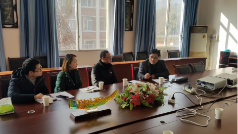
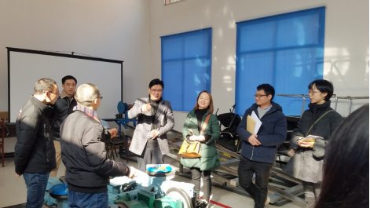

作者：赵杨
时间：2019-10-09 10:13:17 | 来源：本站
2019年1月11日上午，四川（乐山）中德科技促进中心交大工作组、机电工程应用研究所与四川博睿 特外国语学校曾校长一行六人在西南交大峨眉校区进行了座谈，就如何在博睿特学校开展科创训练、 培养学生创新意识，以及如何将德国教育理念融入到博睿特外国语学校课程进行了广泛交流。
座谈中，四川（乐山）中德科技促进中心交大工作组组长、机电所负责人唐阳老师先以当前中国教育的现状、 国家中长期教育发展的要求为引入，指出了现行教育体系中存在的学生考试分数很高、但创新动手能力不足的问题， 这种现象普遍存在于从小学至大学的整个教育过程中。对此，唐教授在峨眉校区进行了一系列教育改革探索， 通过对新进大学生进行选拔、导师有针对性的对学生进行科创指导及工程训练等方式，逐步培养学生的创新创造 习惯及能力。在此过程中，唐教授先后在峨眉校区成立了车辆数字实验室、交大机电工程应用研究所、 交大乐山高新区博士工作站等，为培养学生的创新创造能力搭建平台。在国际化合作方面，交大峨眉校区从 2010年开始已连续8年选送了40多名优秀本科毕业生到德国Ostfalia应用科学大学等攻读硕士研究生。 2016年，由唐教授策划组织成立了乐山高新区、Ostfalia应用科学大学、交大峨眉校区三方共同签订 的四川（乐山）中德科技促进中心，并组建交大工作组，深化中德科技、教育合作。
在听完唐教授的介绍之后，曾校长对博睿特外国语学校发展以及学校开展学生科创的情况作了介绍， 博睿特学校坚持以“一切以学生发展为中心”的办学理念，注重在课余时间培养学生的创新创造能力。 同行的博睿特老师对指导学生开展3D打印、机器人编程等方面遇到的问题与我方成员进行了交流。 曾校长表示，希望能在科创方面得到中德科促交大工作组和机电工程应用研究所相关指导， 并希望就“青少年创新能力培养体系建设”进行合作。唐教授对此表示赞同，希望与博睿特外国语学校进行合作， 细化合作步骤、方案，共同打造博睿特科创培养品牌。
之后，唐教授陪同博睿特老师一同参观了交大机电工程研究所和相关实验室，了解在校大学生参加全国科创比赛的一些情况。